Sully
Diciembre 15, 2016
Chesley Sullenberger " Sully" (Tom Hanks) es un piloto aéreo de la compañía US Airways, que el 15 de Enero del 2009, al poco de despegar de Nueva York con 155 pasajeros y tripulación a bordo, chocó con una bandada de pájaros averiándose los dos motores, teniendo que aterrizar forzosamente en el Río Hudson.
7 años
Diciembre 13, 2016
Cuatro socios fundadores de una gran empresa, se reúnen el sábado con un mediador, para ver quien el lunes ingresa en prisión. Hacienda se ha puesto en jaque, por los presuntos beneficios exportados a paraísos fiscales. 7 años le esperan por delante a uno de los cuatro. ¿Quien será?...
Heidi
Diciembre 1, 2016
Heidi (Anuk Steffe) es huérfana, su tía Dete (Anna Schinz) se ocupa hasta ahora de ella, pero le ha salido un trabajo en Frankfurt y tiene que dejar a Heidi en los Alpes con su abuelo (Bruno Ganz), al que no conoce,TIene una fama horrible en el pueblo. Heidi comenzará a vivir su nueva vida en las montañas, con las cabras, el cabrero y su abuelo. Pero un año después, todo vuelve a torcerse para Heidi...
Operación E
Noviembre 28, 2016
Un campesino nativo de Colombia, vive con toda su familia en el campo gobernado con Farc y suscitado a sus leyes estrictas. Su vida cambia cuando el grupo de guerrilleros le llevan a un niño para que lo cuiden. Lo peor está por venir ya que el niño enferma y necesitan salir de la selva y llevarlo a Bogotá para que sea curado...
Premonición
Noviembre 18, 2016
Joe erriwather (Jeffrey Dean Morgan) y la agente Katherine (Abbie Cornish), están ante un caso de un asesino en serie, con ninguna pista al respecto y con el forense lleno de cadáveres, recurren al doctor Clancy (Anthony Hopkins) ya retirado, Clancy tiene premoniciones de un antes y un después...
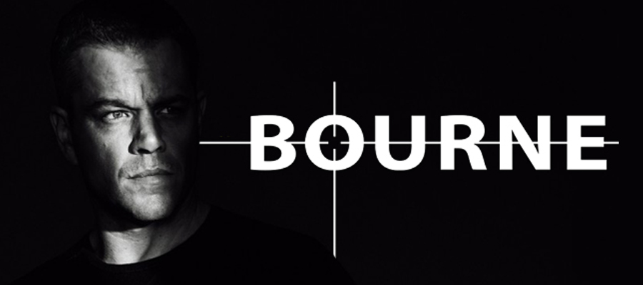
Jason Bourne
Noviembre 14, 2016
Jason Bourne vuelve a la carga, tras doce años de su última operación clandestina, pero ahora que ha recuperado la memoria, tiene mas claro que la muerte de su padre no fue un atentado. Jason Bourne saldrá para buscar respuestas y la CIA que en este tiempo no cesa en recuperarle...
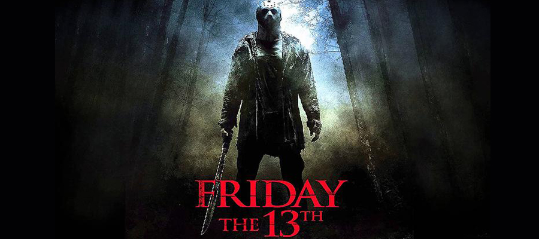
Viernes 13
Octubre 31, 2016
Remake de la película original de 1980. El legendario bosque de Cristal Lake va a acoger a una pandilla de jóvenes. Pese a todas las advertencias vertidas de este sitio, ellos se adentran en el oscuro lugar, no solo por diversión, sino también para buscar a la hermana de uno de ellos. Es viernes 13 y Jasón a salido de caza.
Acantilado
Octubre 27, 2016
Gabriel (Daniel Grao) fiscal en Bilbao muy reputado, recibe una llamada de la Policía de Canarias, diciendo que ha habido un suicidio masivo de chicos y chicas, pertenecientes a una secta Canaria, secta de la que es adepta su hermana Cordelia. Gabriel viajará a las Islas, para averiguar toda la verdad de la desaparición de su hermana. Helena novia de Cordelia le ayudará a encontrar una razón a todo esto...
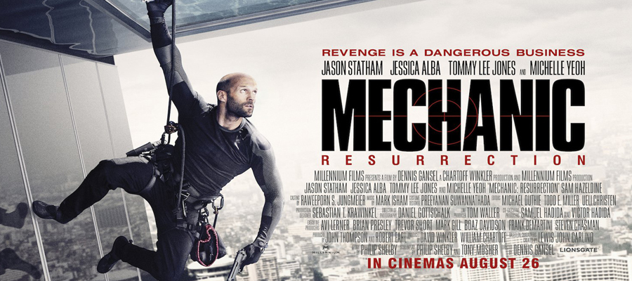
Mechanic Resurrection
Octubre 18, 2016
Arthur Bishop (Jason Statham) ha dejado su pasado criminal atrás, emprendiendo una nueva vida en Rio de Janeiro, pero alguien se cruza en su camino, poniendo en riesgo sus idílicos días. Gina (Jessica Alba), le robará el corazón, error que hará más fuerte a su gran enemigo Riah Crain (Sam Hazeldine) que raptara a Gina, obligando a Arthur a asesinar a tres hombres a cambio de la vida de ella...
Un monstruo viene a verme
Octubre 13, 2016
A sus 12 años Connor (Lewis MacDougall), vive entre su mundo de fantasía donde se aísla de su cruda realidad, una madre enferma de cáncer y un padre ausente, solo tiene a su abuela, una mujer ruda con mucho temperamento, que le impone doctrinas que para su edad...
Independence day: Resurgence
Octubre 06, 2016
Veinte años después, la tierra tiene los avances de tecnología suficientes, para evitar un ataque alienígena como en el pasado, para ello cuenta con un área especializada, llamado Área 51. Lo que no cuentan es que los invasores vienen con un arma indestructible...
El juez
Septiembre 29, 2016
Hank Palmer (Robert Downey Jr.) es un abogado muy reputado en su profesión. Cuando recibe la llamada de su hermano para notificarle que su madre a muerto, tendrá que volver a su pueblo natal, para enfrentarse al fallecimiento de su madre y a la relación muerta que tiene con su padre...
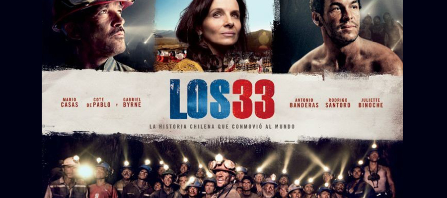
Los 33
Septiembre 27, 2016
Una historia Real que cuenta los 69 días de 33 mineros, atrapados en la Mina de San José a 700 metros de altura. Todo aconteció en el año 2010, el 13 de octubre de este año se conmemora su sexto aniversario. En un país sin recursos, como es Chile se vió arropado por la solidaridad de paises como Canadá, Estados Unidos o Rusia.
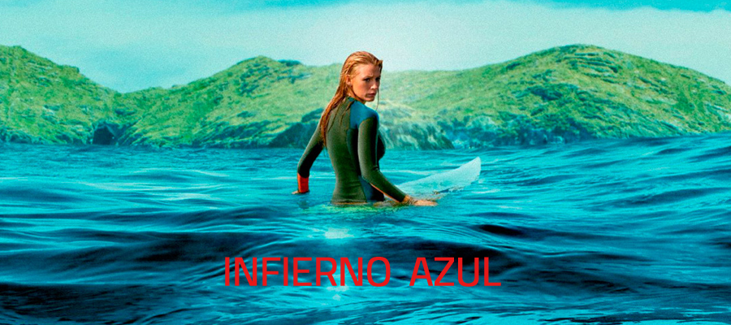
Infierno azul
Septiembre 23, 2016
Nancy (Blake Lively), ha encontrado la playa escondida, de la que su madre tanto hablaba, se encuentra en México. Nancy quiere descubrir en este viaje todo el encanto de sus parajes y surfear las aguas cristalinas de este paraíso mexicano. Una de las olas le descubrirá que esta rodeada por un temible Tiburón...
Toro
Septiembre 19, 2016
Toro (Mario Casas) ha pasado los último cinco años en la carcel, tras haber atropellado a un policia, en una persecución con su hermano, Lopez (Luis Tosar). Toro lleva una nueva vida trabaja ahora de chofer, tiene a su novia y están apunto de concederle la libertad, cuando su hermano Lopez vuelve a entrar en su vida para pedirle ayuda, su sobrina ha sido raptada por el mafioso para el que Toro trabajaba.
La punta del iceberg
Agosto 30, 2016
Una empresa multinacional, abre una investigación interna a una de las empresas adheridas, tras tres fatídicos suicidios en las instalaciones de dicha empresa. A cargo de este mandato pondrán a Sofía Cuevas (Maribel Verdú), que a través de entrevistas a los empleados, jefes y toda persona que haya trabajado ahí durante ese tiempo, le dará para redactar un informe y descubrir toda la verdad de lo que sucede ahí.
Generación Z
Agosto 24, 2016
La tierra se ha repuesto de la invasión Zombie que sufrió hace diez años. convirtiendo como reclamo vacacional una isla habilitada para que vayas a pasar tus vacaciones y puedas matar Zombies...
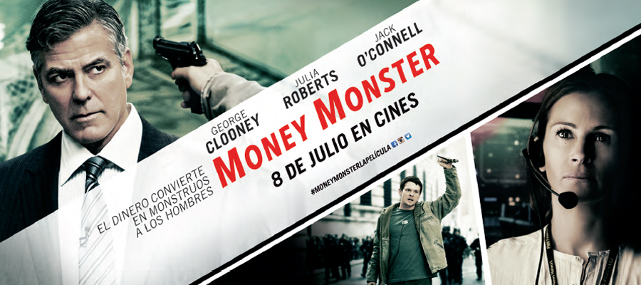
Money monster
Agosto 22, 2016
Lee Gates (George Clooney), es el famoso presentador del programa más famoso del viernes noche, Money Monster, un programa que trata de inversiones en bolsa y todo lo que tiene que ver con el Wall Street. En el último programa de Lee, Kyle Budwell (Jack O ´ Connell), con un detonador y una pistola irrumpe en el plato del programa, para pedirle explicaciones a Lee sobre un consejo que dio en directo sobre alguna inversión y que a día de hoy le ha hecho perder todos los ahorros de su vida...
Summer camp
Agosto 19, 2016
Cuatro jóvenes estadounidenses se disponen a pasar sus vacaciones siendo monitores en un campamento al norte de España. Cuando llegan una terrible infección está asolando todo el campamento. Pasar la primera noche y no contagiarse de esta terrible infección será clave para salvar sus vidas ...
KIKI el amor se hace
Agosto 8, 2016
Cinco historias que como protagonista tienen las filias como Dracrifilia, Harpaxofilia,Sonmofilia, así hasta cinco modalidades que harán que los protagonistas, descubran la mejor manera de disfrutar del sexo con o sin sus manías. Aquí la libertad y despertar de nuevos sentidos será el plato principal de cada historia ...
El hijo de Saúl
Agosto 3, 2016
Año 1944, Auschwitz Campo de concentración. Saúl judío húngaro es prisionero y encargado de retirar los cadáveres gaseados en las cámaras de los prisioneros judíos. Pero un día encuentra entre todos los cadáveres un superviviente, un niño, que poco tarda en morir, Saúl le hará pasar como su hijo...
Lobos sucios
Julio 26, 2016
Manuela (Marian Alvarez) y Candela (Manuela Vellés) son dos mineras gallegas, que intentan sobrevivir en la mina gobernada por los Nazis. Manuela es la hermana mayor y sufre el rechazo de todo el mundo por considerarla medio bruja, pero el jefe alemán se fija en ella y en sus artes adivinatorias...
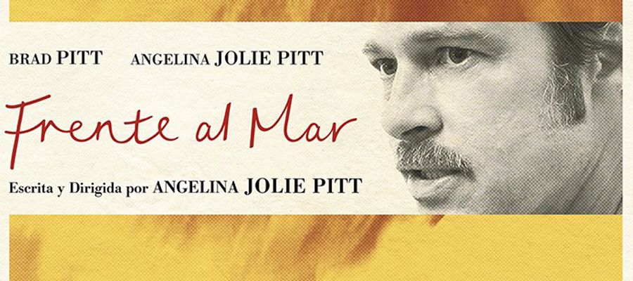
Frente al mar
Julio 22, 2016
Vanessa (Angelina Jolie) y Roland (Brad Pitt), están en Francia para pasar unas bonitas vacaciones en un hermoso hotel, frente al mar, así podrá ayudarle a Roland para inspirarse en su nuevo libro, además el matrimonio esta pasando una fuerte crisis...
Cien años de perdón
Julio 13, 2016
Seis ladrones bien armados, irrumpen en el Banco Central de Valencia. El Uruguayo es el líder de la banda y quiere perpetrar el robo perfecto, rápido y sin hacer daño a nadie, pero algo se complica cuando entra en escena una caja misteriosa 314...
El pianista
Junio 29, 2016
Wladyslaw es un pianista reputado de origen Judio. En 1939 Varsovía es invadida por los alemanes, creando el getto donde todos los que eran judios eran llevados a zonas especificas Wladyslaw sobrevivirá con la ayuda de amigos, pero tendrá que vivir en la sombra sin ser descubierto, pasando verdaderas penalidades...
El vuelo
Junio 22, 2016
Whip Whitaker (Denzel Washington) es comandante piloto que tendrá que poner en práctica todos sus conocimientos y experiencia, al hacer un aterrizaje de emergencia, en medio del campo, hecho que salvará la vida a muchos pasajeros....
Un paseo por el bosque
Junio 15, 2016
Bill Bryson (Robert Redford), y un viejo amigo (Nick Nolte), emprenderán una aventura que les hará recorrer el camino más largo de senderismo del mundo, los Appalachian Trail. El gran inconveniente de este viaje es, que cada uno de ellos la palabra aventura, la define y aplica muy indistintamente....
El libro de la selva
Junio 8, 2016
Mowgli (Neel Sethi) apodado en la selva como el cachorro humano esta creciendo en la selva desde que Magila la pantera negra se lo encontró cuando era pequeño y decidió, entregarlo a la manada de lobos, para que lo criaran igual que a sus lobeznos. Pero Mowgli ya no esta seguro el temible Sercan quiere terminar con su vida...
Secretos de una obsesión
Junio 1, 2016
Han pasado ya trece años, del asesinato a sangre fría de la hija de una agente del FBI Jess (Julia Roberts). Tras el grave hallazgo, tanto Jess como su compañero de trabajo Ray (chiwetel Eijofor) son relevados de sus puestos, les apartan del caso por su grado parental. Jess y Ray han seguido con sus vidas pero sin olvidar por un momento que todavía el asesino esta suelto...
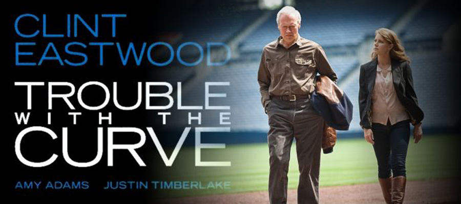
Un golpe de efecto
Mayo 20, 2016
Un ojeador de béisbol retirado al que que le comunican que va a perder la vista, hecho que le unira a su hija a la que hace mucho tiempo que no ve y con la que no tiene una buena relación. La gente de la profesión ya no cree en el y en su intuición para ver a un buen jugador...
Decisión final
Mayo 11, 2016
Sonny Weaver Jr. (Kevin Costner) es el Director General de los Browns de Cleveland. La NFL se empieza a jugar antes y el turno de Weaver empieza por elegir el primero, él quiere al mejor jugador de futbol, pero su decisión le costará mucho sacrificio tanto en el terreno de juego como en el terreno sentimental...
El bosque de los suicidios
Mayo 5, 2016
Sara (Natalie Dormer) Jess (Natalie Dormer, son hermanas gemelas y viven con un vínculo muy especial. Sara recibirá una llamada de auxilio de su hermana Jess, según la policía se adentrado en el bosque llamado Aokigahara a los pies de Monte Fuji, donde la gente se adentra para suicidarse y no ser encontrados...
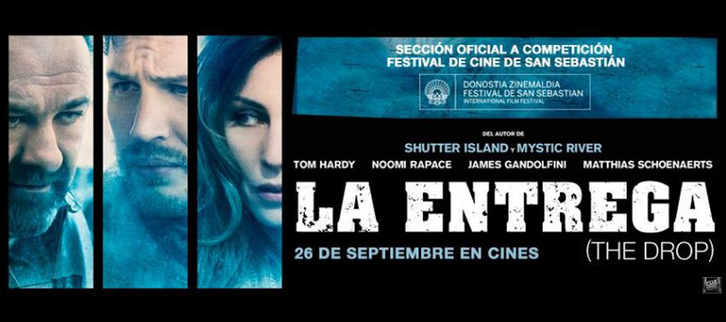
La entrega
Abril 27, 2016
Bon (Tom Hardy) es un camarero en el barrio de Brooklyn, cuando sale un día de trabajar, encuentra en la basura a un cachorro de Pitbull malherido. Con la ayuda de una vecina lo adoptará para darle una vida digna. Los problemas de Bon llegan, cuando el dueño del perro, un perturbado del barrio quiere que le devuelva al animal...
Un buen matrimonio
Abril 19, 2016
Basado en el relato de Stephen King, Todo Oscuro, Sin Estrellas. Darcy (Joan Allen) y Bob Anderson (Anthony Lapaglia) es un matrimonio que celebran sus Veinticinco Aniversario con una gran fiesta. En la vida de los Anderson todo parece perfecto, hasta que una noche Darcy descubre que su amado esposo, es un peligroso asesino en serie...
La novia
Abril 12, 2016
Adaptación de Bodas de Sangre de Federico García Lorca. Antes de la boda, la novia (Inma Cuesta), recibe la visita de una mendiga, que le dice " No te cases , sino le amas". El novio ( Asier Etxeandía) por su parte cumple el sueño de casarse, con la persona a la que ama desde que era pequeño...
El regalo
Abril 6, 2016
Simón ( Jason Baterman) Y Robyn (Rebeca Hall) son un matrimonio de Chicago, que se mudan por cuestiones de trabajo a California. La casa donde residirán es grande y acogedora parece todo perfecto, hasta que aparece Gordo (Joel Edgerton) un antiguo compañero de clase de Simón del colegio...
Amy
Marzo 30, 2016
El documental de la vida y muerte de la cantante de Soul más famosa del siglo XXI, hablamos de la cantautora Amy Whinthouse. Murió el 23 de Julio del 2011, a los 27 años de edad, por parada cardiaca, producto de sus adiciones a las drogas y el alcohol...
El marido de mi hermana
Marzo 23, 2016
Richard Haign (Pierce Brosnan) y Kate (Jessica Alba), son profesor y alumna a la que las clases del profesor ha sucumbido en horarios extras, esto conllevará que Kate se quede embarazada. Richard es un reputado profesor de la universidad de Cambridge y lo tendrá que dejar todo para irse con Kate y su futuro hijo, a los Ángeles...
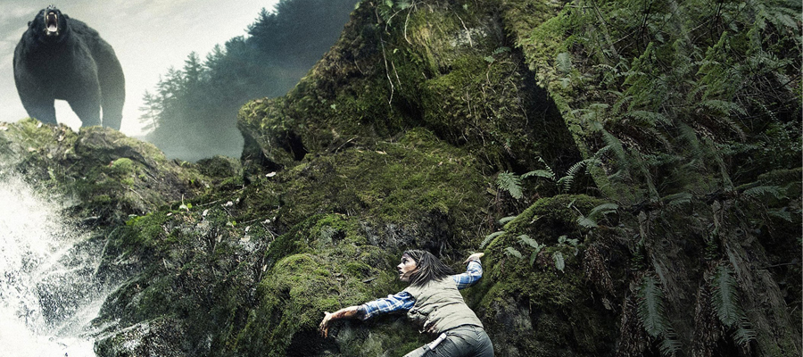
En el bosque sobrevive
Marzo 15, 2016
Una pareja se dispone a pasar un fin de semana en el bosque, él conoce muy bien la zona, o eso parece porque sin darse cuenta se encuentran que están perdidos y que cada vez se adentran más, en la zona gobernada por un Oso. Ahora tendrán que buscar una salida pero sobre todo sobrevivir a las garras del Oso.

Max
Marzo 8, 2016
Es un perro adiestrado para misiones en Afganistán. Tras sufrir una experiencia muy traumática es enviado a Estados Unidos junto con el cuerpo de su compañero de viaje Kule. Max ya no podrá servir como antes a los marines, y se les propondrá a la familia de Kule que lo adopte...
La verdad duele
Marzo 1, 2016
Basada en Hechos Reales. El Doctor Omaru lleva más de dieciocho años en Estados Unidos, ejerciendo de médico forense, se le presenta un caso que llama su atención, un ex jugador de futbol americano, que previsiblemente no tenía ninguna enfermedad, es hallado muerto supuestamente se ha quitado la vida. Seguirán añadiéndose casos de muertes de jugadores, y el doctor Omaru empezará a investigar las muertes y sus raras circunstancias...
Si decido quedarme
Febrero 19, 2016
Mia y toda su familia se disponen a a pasar un día de nieve, cuando sus vidas se truncan por un terrible accidente. Mia se queda atrapada entre los dos mundo, siendo solo ella y nada más que ella la que puede decidir quedarse en el mundo de los vivos o cruzar al otro lado...
El renacido
Febrero 15, 2016
1823, Hugh Glass (Leonardo DiCaprio) pertenece a una expedición que viaja a la America profunda, se dedican a poner trampas para cazar animales y vender sus pieles. Los nativos del lugar les siguen muy de cerca para arrebatarles las pieles conseguidas, eso provocará una guerra sin cuartel que les hará huir a las profundidades del bosque...
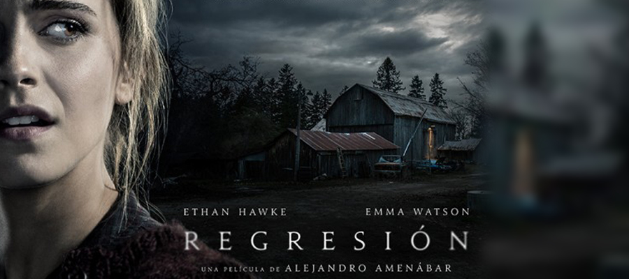
Regression
Febrero 4, 2016
El detective Bruce Kenner (Ethan Hawke), tiene ante sí, un caso espeluznante, la joven Angela (Emma Watson), acusa a su padre de agredirla sexualmente. Un psicólogo que trabaja con la policía, someterá al padre a terapia de regresión para revivir lo que ellos admiten que no recuerdan...
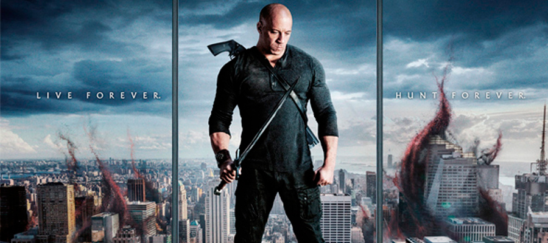
El último cazador de brujas
Febrero 1, 2016
Kaulder (Vin Diesel), es el último cazador de brujas del planeta, la bruja reina le hechizó con la eterna vida. Después de mantener a raya a todas las brujas de todos los tiempos, ahora le toca luchar con las brujas del siglo XXI...
Marte
Enero 19, 2016
Mark Watney (Matt Damon), astronauta de profesión, se encuentra en una misión en el planeta rojo, Marte. Toda la tripulación de la nave sufrirá una tormenta que hará que tengan que salir del planeta antes de ser arrastrados y devorados por la misma. Mark sufrirá un accidente en la evacuación y lo darán por muerto. Desde la Nasa se darán cuenta que Mark, sigue vivo.La Nasa y con la ayuda de la tripulación de la nave, elaborarán un plan de rescate...
El becario
Enero 15, 2016
Ben Whittaker (Robert De Niro), está jubilado y viudo, su vida es una monotonía diaria, hasta que encuentra una oferta de trabajo a su medida, buscan becarios de más de 60 años, para una empresa de moda...
Palmeras en la nieve
Enero 13, 2016
Killian dejará su Pasolobino (Orense) querido, para viajar a Guinea Ecuatorial a trabajar en la recogida del cacao junto con su hermano Jacobo y su padre. La finca Samkalpa le espera, allí le asignarán un boy llamado Simón, que le ayudará a conocer mejor, los dos ambientes que vive, por un lado los nativos y por otro los colonos...
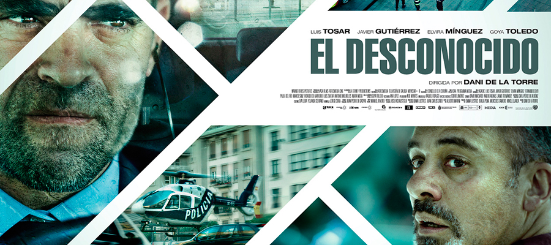
El desconocido
Enero 11, 2016
Carlos trabaja en un reputado banco llevando las finanzas de clientes Vip. Una mañana dispuesto hacer su rutina diaria de llevar a sus hijos al colegio y luego ir a su trabajo, pero algo cambia cuando se montan en el coche, ya que reciben la llamada de un desconocido, diciendo que tienen una bomba adherida al asiento del coche...
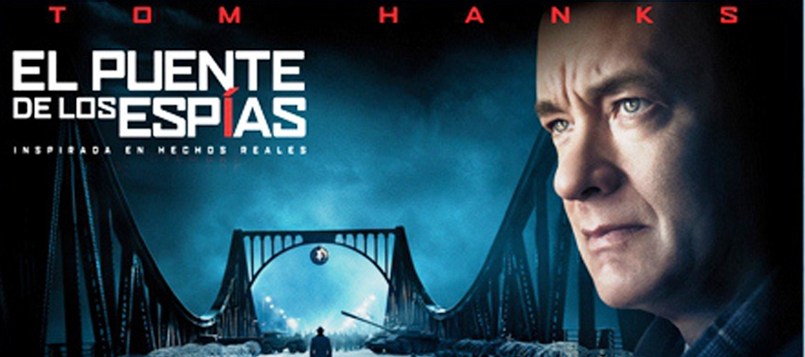
El puente de los espias
Enero 8, 2016
James Donovan (Tom Hanks) un abogado de Brooklyn le asignan un caso de Rudolf Abel (Marc Rylance) al que le acusan de ser espía Soviético, James tendrá que luchar por defender a alguien que ya le han condenado antes del juicio...
Una aventura polar
Enero 5, 2016
El pequeño Lucke se dispone a pasar sus vacaciones de invierno, en un pueblecito al norte de Canadá. Una noche de mucho frío oirá ruidos en el cobertizo y allí descubrirá un pequeño oso Polar. Pronto Lucke querrá devolver al pequeño con su madre...
Un cuento de Navidad
Enero 4, 2016
Belle trabaja con su padre en el sector de compraventa de propiedades y antigüedades. Muy próxima a las Navidades les encargan una tasación entera de una gran mansión, el propietario le corre mucha prisa ponerla a la venta, por ello Belle se tendrá que trasladar cuanto antes a la gran mansión...
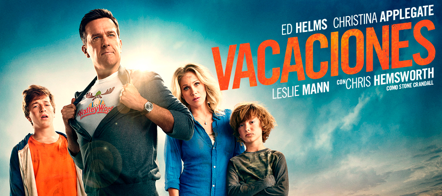
Vacaciones
Diciembre 21, 2015
La familia Griswold, se dispone a pasar unas vacaciones diferentes en familia, por ello alquilarán un coche de última generación, para emprender su maravilloso viaje. Walley World el parque de atracciones más grande del estado de Texas les espera...
Ocho apellidos catalanes
Diciembre 17, 2015
Rafa dejó a Amaia o Amaia a Rafa?, la historia es que Amaia se ha enamorado de un Catalán y pretende casarse. Koldo se presentará en Sevilla para ver a Rafa y convencerle de que le acompañe a Cataluña a rescatar a Amaia de esta terrible boda...
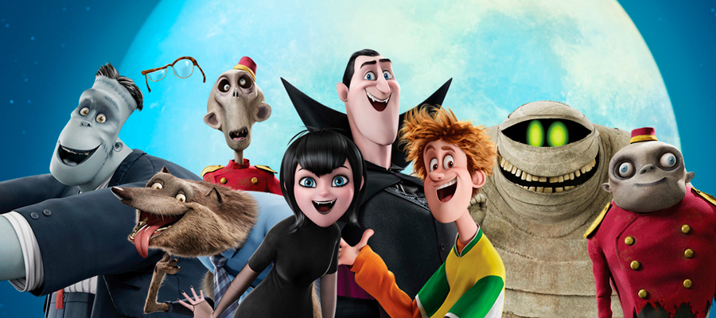
Hotel Transilvania 2
Diciembre 14, 2015
En el hotel más famoso de Transilvania, acaba de Nacer el adorable Dennis. Mavis y su marido quieren criar a su hijo fuera del monstruoso hotel, para que pueda convivir con otros seres humanos, para ello viajarán a California, dejando al cargo de su hijo al temible abuelo conde Drácula...
Solo química
Diciembre 10, 2015
Olivia vive con sus tres amigos en un piso de alquiler, trabaja como dependienta en una perfumería y vive enamorada del actor de moda Argentino llamado Eric Soto...
Como sobrevivir a una despedida
Diciembre 02, 2015
¡¡Gisela se casa!!, el grupo de amigas de la infancia le preparan una despedida de soltera por todo lo alto. Gran Canaria les espera, un ambiente ideal para poner desenfreno y locura a esta gran fiesta.
Ahora o nunca
Noviembre 30, 2015
Eva y Alex se disponen a casarse en el lugar donde se conocieron, Irlanda será el lugar elegido para celebrar con amigos, familia este enlace matrimonial. El vestido de la novia sufre un retraso, por lo que Alex decide quedarse un día más, mientras Eva prepara los últimos detalles del día...
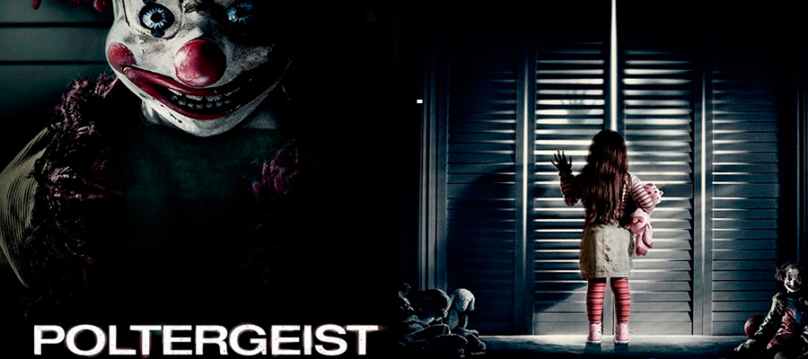
Poltergeist
Noviembre 24, 2015
Remake de la película original de 1982. Una familia Americana se muda a vivir a una casa, donde pronto descubrirán que no están solos, lo que allí habita, son espíritus del pasado. La niña pequeña del matrimonio será, la unión entre los dos mundos, el vivo y el de los muertos.
San Andrés
Noviembre 17, 2015
En California se desencadena un terremoto de magnitud 9, dejando arrasado todo lo que deja a su paso. Ray (Dwayne Johnson), ha perdido comunicación con su única hija tras el terremoto. Su arma contra tal catástrofe es que cuenta con su helicóptero y su experiencia en rescates extremos...
Felices 140
Noviembre 03, 2015
Elia cumple 40 años, y quiere celebrarlo alquilando una casa con todo tipo de comodidades, para deleitar a su familia y amigos, aparte de celebrar sus 40 años. Elia quiere contarles que ha sido la ganadora del bote del Euromillón que asciende a 140 millones de Euros...
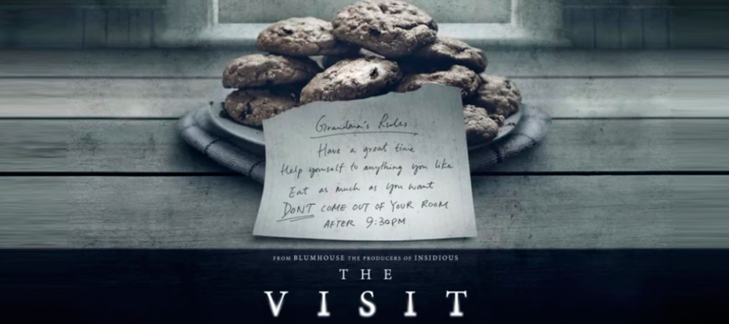
La visita
Octubre 28, 2015
Dos hermanos se disponen a pasar una semana con sus abuelos en Pensilvania,.Abuelos que no conocen, pero ahora tendrán la oportunidad de disfrutar de las galletitas de la abuela y las historias de la guerra del abuelo, todo parece perfecto. Pero...
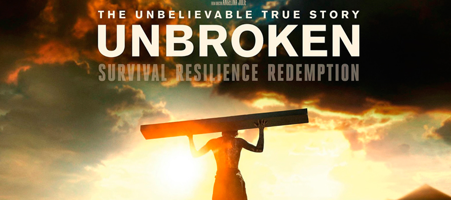
Unbroken
Octubre 22, 2015
Cuenta la historia de Louise un corredor olímpico que tras participar, se alista en las fuerzas aereas de los Estados Unidos. Tras sufrir un bombardeo el y dos compañeros se quedan a la deriva durante 45 días, subsistiendo con lo que podían, cuando piensan que todo les cambia, es a peor...
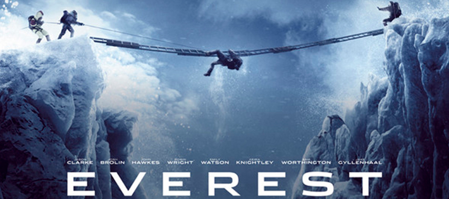
Everest
Octubre 06, 2015
Cuenta la historia acontecida en el año 1996, donde dos expediciones dirigidas por dos afamados alpinistas se disponen a llegar al pico más alto del mundo. Lo peor no es la subida sino será bajar...
Espias
Octubre 02, 2015
Susan Cooper (Melissa McCarthy) trabaja en la CIA, siendo analista de zona. Susan quiere una oportunidad en el campo, y llegará de la mano de su compañero al fallecer en extrañas circunstancias...
Caza al asesino
Septiembre 29, 2015
2007 República El Congo. Jim Terrier es un espía Londinense destinado en el Congo, al que le encargan una misión y es, cargarse al ministro de Industria, Ocho años después del día del atentado, Jim intenta lavar su conciencia regresando para ayudar a un país sumergido en una eterna guerra civil...
Tiempo sin aire
Septiembre 24, 2015
María una enfermera colombiana desecha de dolor por la muerte de su hija a manos de unos paramilitares, viaja a España a Santa cruz de Tenerife, para dar con los responsable de lo sucedido y así vengarse…
El maestro del agua
Septiembre 11, 2015
Ambientada cuatro años después de la batalla Gallipoli de Turquía. Un australiano pierde a sus tres hijos en combate, su mujer los quiere enterrar en su país de origen, para ello el Sr. Connor, viaja a Estambul para averiguar el paradero de los cuerpos de sus hijos…
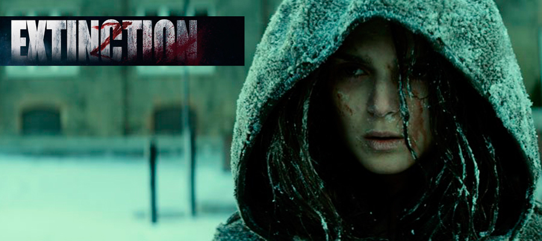
Extinction
Septiembre 08, 2015
Harmony será el refugio de Patrick, Jack y Lu, tras la infección letal que infectó a toda la raza humana. Entre ellos existe un secreto, que pronto saldrá a la luz…
La piramide
Septiembre 04, 2015
Un equipo de arqueólogos estadounidenses están haciendo un reportaje sobre una pirámide que acaban de descubrir en Egipto. Se adentrarán para conocer los entresijos de tal hallazgo...
Ted 2
Agosto 31, 2015
Ted y Tamy ya son marido y mujer, ahora quieren ir a por el niño, lo primero que tienen que hacer es buscar un donante, tarea que no será nada fácil. Cuando tienen todo lo necesario...
Beyond The Lights
Agosto 26, 2015
Nomy está a punto de convertirse en una gran estrella de la música, éxito que hace que se replantee si es la vida que quiere llevar. Su madre dirige toda su carrera y su vida, algo que Nomy lleva francamente mal...
Desde Plato16 nuestro pequeño homenaje a la “Gran Lina Morgan”
Agosto 24, 2015
El pasado jueves nos ha dejado María de los Ángeles López Segovia, la “Gran Lina Morgan” a los 78 años de edad.
Recordarte es poner en mi cabeza un papel indiscutible alabado como fue Hostal Royal Manzanares, donde hacías comedia ensalzando el humor con la mejor de tus sonrisas, películas tan célebres como “La Tonta del Bote”, una frase tan despectiva castellana que tu llenaste de vida. El viernes pasado cerró sus puertas el Gran Teatro La Latina, para abrirlo a la “Gran Lina Morgan”.
Whitney la película
Agosto 19, 2015
Cuenta la biografía de la diva del Soul, Whitney Houston, su comienzo en un coro de la iglesia guiada por la mano de su madre, hasta la cúspide de su carrera, que llegará con el éxito de la película el Guardaespaldas...
Entrevista a José Pérez Barroso, Director de Plató16
Agosto 07, 2015
Empecé en el año 1998 en el mundo de la publicidad, comercializando cuñas de radio en Europa FM, posteriormente pasé a ocupar la dirección de una edición en el periódico Diario 16, procedencia del nombre de Plató16...

CRÍTICAS DE CINE 2016
- Sully 15/12/2016
- 7 años 13/12/2016
- Heidi 01/12/2016
- Operación E 28/11/2016
- Premonición 18/11/2016
- Jason Bourne 14/11/2016
- Viernes 13 31/10/2016
- Acantilado 27/10/2016
- Mechanic resurrection 18/10/2016
- Un monstruo viene a verme 13/10/2016
- Independence day: Resurgence 06/10/2016
- El juez 29/09/2016
- Los 33 27/09/2016
- Infierno azul 23/09/2016
- Toro 19/09/2016
- La punta del iceberg 30/08/2016
- Generación Z 24/08/2016
- Money monster 22/08/2016
- Summer camp 19/08/2016
- KIKI el amor se hace 08/08/2016
- El hijo de Saúl 03/08/2016
- Lobos sucios 26/07/2016
- Frente al mar 22/07/2016
- Cien años de perdón 13/07/2016
- El pianista 29/06/2016
- El vuelo 22/06/2016
- Un paseo por el bosque 15/06/2016
- El libro de la selva 08/06/2016
- Secretos de una obsesión 01/06/2016
- Un golpe de efecto 20/05/2016
- Decisión final 11/05/2016
- El bosque de los suicidios 05/05/2016
- La entrega 27/04/2016
- Un buen matrimonio 19/04/2016
- La novia 12/04/2016
- El regalo 06/04/2016
- Amy 30/03/2016
- El marido de mi hermana 23/03/2016
- En el bosque sobrevive 15/03/2016
- Max 08/03/2016
- La verdad duele 01/03/2016
- Si decido quedarme 19/02/2016
- El renacido 15/02/2016
- Regression 04/02/2016
- El último cazador de brujas 01/02/2016
- Marte 19/01/2016
- El becario 15/01/2016
- Palmeras en la nieve 13/01/2016
- El desconocido 11/01/2016
- El puente de los espias 08/01/2016
- Una aventura polar 05/01/2016
- Un cuento de navidad 04/01/2016
- Vacaciones 21/12/2015
- Ocho apellidos catalanes 17/12/2015
- Hotel Transilvania 2 14/12/2015
- Solo química 10/12/2015
- Como sobrevivir a una despedida 02/12/2015
- Ahora o nunca 30/11/2015
- Poltergeist 24/11/2015
- San Andrés 17/11/2015
- Felices 140 03/11/2015
- La Visita 28/10/2015
- Unbroken 22/10/2015
- Everest 06/10/2015
- Espias 02/10/2015
- Caza al asesino 29/09/2015
- Tiempo sin aire 24/09/2015
- El Maestro del Agua 11/09/2015
- Extinction 08/09/2015
- La Pirámide 04/09/2015
- TED 2 31/08/2015
- Beyond The Lights 26/08/2015
- Whitney la película 19/08/2015